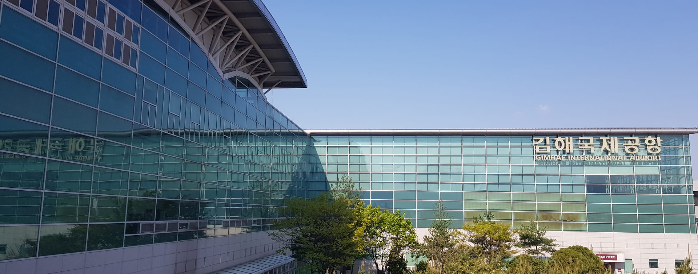

입국·도착 안내
한국 도착부터 BEXCO까지 — 항공편·KTX·버스·시내교통 전체 안내
입국 경로 · Gateway
Part 1. 한국 입국
부산 김해국제공항(PUS)은 아시아 주요 도시에서 직항편이 운항됩니다. 부산이 최종 목적지라면 환승 없이 바로 입국할 수 있습니다.
| 지역·국가 | 취항 도시 |
|---|---|
| 🇯🇵 일본 | 도쿄(나리타·하네다), 오사카(간사이), 나고야, 삿포로(신치토세), 후쿠오카 등 |
| 🇨🇳 중국 | 베이징, 상하이, 칭다오, 광저우 등 |
| 🇹🇼 대만 | 타이베이(타오위안), 가오슝 |
| 🇻🇳 베트남 | 냐짱(깜란), 다낭, 호치민, 하노이 |
| 🇸🇬 싱가포르 | 창이 |
| 🇹🇭 태국 | 방콕(수완나품) |
| 🇵🇭 필리핀 | 마닐라, 세부 |
📍 직항 취항 도시 26개 도시 / 7개국 · 운항사: Air Busan, Jin Air, Jeju Air, Korean Air 등
최신 운항 스케줄은 각 항공사 홈페이지 또는 예약 채널에서 확인하세요.
최신 운항 스케줄은 각 항공사 홈페이지 또는 예약 채널에서 확인하세요.
부산 직항이 없는 지역에서 출발하는 경우, 인천공항(ICN)에서 대한항공 국내 구간을 이용해 김해공항(PUS)으로 환승할 수 있습니다.
- 대한항공 하루 5~6편 운항 (ICN → PUS)
- 국제선 여정의 일부로만 예약 가능 (국제선 + 국내 연결편 통합 발권)
- 인천 제2터미널(T2) 환승 후 김해공항에서 입국심사
| 편명 | 출발 (ICN) | 운항 요일 |
|---|---|---|
| KE1401 | 07:45 | 매일 |
| KE1403 | 09:30 | 매일 |
| KE1411 | 16:35 | 월·금·토·일 |
| KE1405 | 18:20 | 매일 |
| KE1407 | 19:35 | 매일 |
| KE1409 | 20:45 | 매일 |
※ 상기 시간표는 참고용이며, 실제 스케줄은 대한항공(koreanair.com) 또는 항공권 예약 채널에서 확인하세요.
인천공항(ICN)에서 김포공항(GMP)으로 이동 후, 김포-부산 국내선을 이용하는 경로입니다.
① ICN → GMP 이동
| 교통수단 | 소요시간 | 요금 |
|---|---|---|
| AREX 공항철도 | 약 30분 | KRW 4,150 |
| 리무진버스 | 30~40분 | KRW 16,000~21,100 |
| 택시 | 약 40분 | KRW 43,000~ |
② GMP → PUS 항공편
| 항공사 | 소요시간 | 일일 편수 |
|---|---|---|
| Air Busan | 약 70분 | 하루 10편 |
| Korean Air | 약 60분 | 하루 8편 |
| T'way Air | 약 60분 | 하루 3편 |
| Jeju Air | 약 60분 | 하루 1편 |
※ 공항 간 이동 및 체크인 시간을 감안해 최소 3시간 여유를 두고 이동하세요.
인천공항에서 서울역으로 이동 후 KTX를 타고 부산역(KTX)까지 이동하는 경로입니다.
① ICN → 서울역 이동
| 교통수단 | 소요시간 | 요금 |
|---|---|---|
| AREX 직통열차 | 약 43분 | KRW 9,500 |
| 리무진버스 6001번 | 약 60~70분 | KRW 17,000 |
| 리무진버스 6702번 | 약 60~70분 | KRW 18,000 |
| 택시 | 약 70분 | KRW 60,000~ |
② 서울역 → 부산역 (KTX)
| 구분 | 소요시간 | 요금(편도) | 예약 |
|---|---|---|---|
| 특실 (First Class) | 약 2시간 30분 | KRW 83,700 | korail.com |
| 일반실 (Standard) | KRW 59,800 |
💡 KTX 좌석은 사전 예약이 권장됩니다. 학술대회 기간에는 수요가 높을 수 있습니다. korail.com에서 최소 2~4주 전 예약하세요.
별도 환승 없이 인천공항에서 해운대까지 직행으로 이동하는 리무진버스입니다. 짐이 많은 경우 편리합니다.
| 구분 | 내용 |
|---|---|
| 소요시간 | 약 5~6시간 |
| 요금 | KRW 53,500 |
| T1 운행시간 | 06:20 ~ 23:50 |
| T2 운행시간 | 06:00 ~ 23:30 |
T1 배차 시간표
06:20
07:50
09:00
09:50
10:30
11:10
12:10
13:10
14:00
15:00
16:00
17:00
19:40
21:00
22:20
23:50
⚠️ 배차 시간은 운수사 사정에 따라 변경될 수 있습니다. 탑승 전 반드시 확인하세요. 해운대 방면 정류장: 해운대해수욕장, 그랜드호텔, 파라다이스호텔 등 경유.
행사장 접근 · Venue Access
Part 2. BEXCO 이동
김해국제공항(PUS) 도착 후 BEXCO(센텀시티)까지 이동하는 방법입니다.
| 교통수단 | 경로 | 소요시간 | 요금 |
|---|---|---|---|
| 🚇 지하철 | 경전철 김해공항역 → 사상역 (1호선 환승) → 서면 (2호선 환승) → 센텀시티역 | 약 70분 | KRW 2,300 |
| 🚌 공항리무진 | 해운대·기장 방면 리무진 (BEXCO 인근 경유) | 약 60분 | — |
| 🚕 택시 | 국내선 청사 1층 2번 출구 승차 → BEXCO 직행 | 약 60분 | KRW 40,000~ |
🚌 APHRS 셔틀(유료): 공항 → 해운대 공식호텔 운행. 입국일(10/21~22) 배차.
🚌 APHRS 셔틀 예약하기 →
KTX 부산역 도착 후 BEXCO(센텀시티)까지 이동하는 방법입니다.
| 교통수단 | 경로 / 정보 | 소요시간 | 요금 |
|---|---|---|---|
| 🚇 지하철 | 부산역 (1호선) → 서면 (2호선 환승) → 센텀시티역 | 약 55분 | KRW 1,800 |
| 🚌 버스 1001번 | 04:30 ~ 22:00 · 10분 간격 운행 | 약 40분 | KRW 2,100 |
| 🚌 버스 1003번 | 04:20 ~ 22:20 · 10분 간격 운행 | 약 40분 | KRW 2,100 |
| 🚕 택시 | 부산역 택시 승차장 → BEXCO 직행 | 약 30분 | KRW 22,000~ |
🚌 APHRS 셔틀(유료): 부산역 → 해운대 공식호텔 운행. 입국일(10/21~22) 배차.
🚌 APHRS 셔틀 예약하기 →